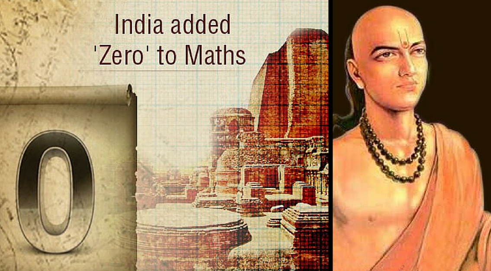
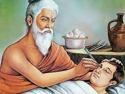
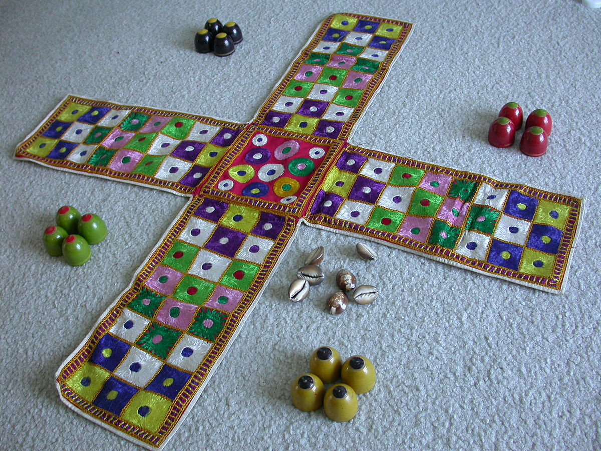

- Zero and its operation were first defined by (Hindu astronomer and mathematician) Brahmagupta.
- The invention of O was inspired by the Hindu concept of Shunyata.
- Zero has changed the way we perceive Maths and Science.
- Without zero, we would have no financial accounting or calculus.
- It’s not a reach to say that the number is responsible for the explosion of technology we see today as 0 and 1
make up the binary code. The Binary code denotes text, computer processor instructions, or any other data that uses a
two-symbol system.
- India is also credited to many other mathematical formulas and discovries like the quadratic formula, trignometric functions,
algebra, abreviatons for square roots and cube roots, decimals and the Pascal Triangle.
|
- India is credited to be the inventors of the ancient art of Yoga.
- The term yoga has been derived from a Sanskrit word which translates to basically union and discipline.
- Yoga is widely considered to be one of the best ways to keep ones body phisically and mentally healthy.
- Yoga is an ancient art that connects the mind and body. It is an exercise that we perform by balancing the
elements of our bodies.
- In addition, it helps us meditate and relax. Moreover, yoga helps us keep control of our bodies as well as mind.
It is a great channel for releasing our stress and anxiety.
- We can achieve a higher level of concentration through yoga and also learn how to steady our emotions.
- It connects us to nature like never before and enhances our social well-being.
|

- India is one of the greatest pionneer of medicinal surgeries.
- Complex surgeries like cataract surgery and plastic surgery were invented in India and have been
practices there since thousands of years.
- Cataract surgery was known to the Indian physician Sushruta. In India, cataract surgery was performed with a
special tool called the Jabamukhi Salaka, a curved needle used to loosen the lens and push the cataract out of
the field of vision.
- India has also got its own feild of medicinal care which is practiced using indigenious herbs called
Ayurveda.
- The cure for leprosy and Visceral leishmaniasis were also discovered in India.
- The origins of gene engineering can also be traced back to India.
|

- Many of the modern games which are flourishing in other nations had their beginnings in India.
- Ludo was first played in the 6th century and the game was called Pachisi evolved from a very ancient
game called Chausar played by Kauravas and Pandavas.
- Many historians point out that there is a depiction of this game in the caves of Ellora.
- One of the most ancient games that originated in India, Chess was initially called Ashtapada.
The game then came to be called as Chaturanga during the rule of Gupta Empire. It was
called Shatranj by the Persians.
- It is very interesting to know that the card games originated in India and were introduced in the
16th century by the Mughal emperors who called the game Ganjifa.
- Other games Invented by Indians include snakes and ladders,carrom and table tennis.
- Playing dice were also invented in India.
|